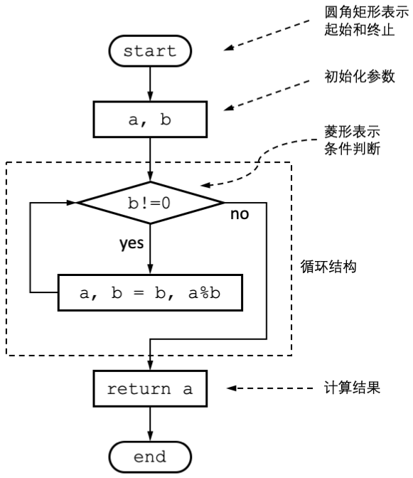
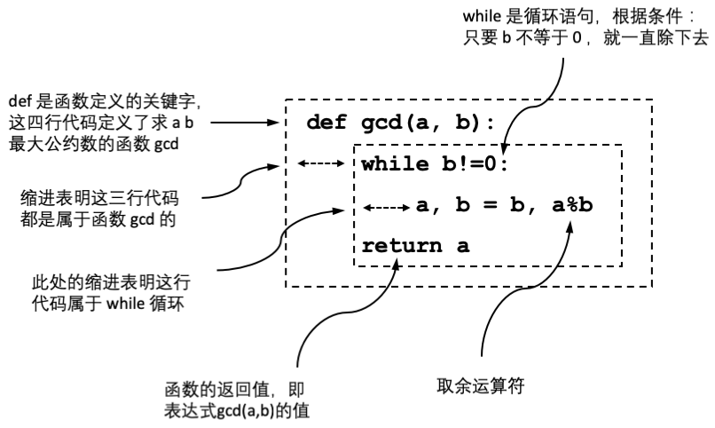

原文连接:https://www.cnblogs.com/mochou/p/11737434.html
本节以欧几里得算法（这是人类历史上最早记载的算法）为示例，向读者展示注释、文档字符串(docstring)、变量、循环、递归、缩进以及函数定义等Python语法要素。
欧几里得算法：“在数学中，辗转相除法，又称欧几里得算法(Euclidean algorithm)，是求最大公约数的算法。辗转相除法首次出现于欧几里得的《几何原本》（第VII卷，命题i和ii）中，而在中国则可以追溯至东汉出现的《九章算术》。两个整数的最大公约数是能够同时整除它们的最大的正整数。辗转相除法基于如下原理：两个整数的最大公约数等于其中较小的数和两数的差的最大公约数。”---《维基百科.辗转相除法》
在实际操作中，可以使用带余数除法替代减法以减少步骤。下面是使用流程图绘制的算法示意图：

图 1.2 欧几里得算法流程图
在程序设计实践中，很少针对简单的程序绘制流程图。因为对于熟练的程序设计者来说，代码本身足以清晰地说明程序的执行流程。流程图往往用于描述大的软件系统的工作原理，或者用来辅助不够结构化的语言（如汇编语言）。
根据前述算法描述，计算252和105的最大公约数的计算步骤如下：
1．252除以105余42，问题转为求105和42的最大公约数；
2．105除以42余21，问题转为求42和21的最大公约数；
3．42除以21可以除尽，达到算法终点；
4．结论：252和105的最大公约数为21。
代码 1.2展示了欧几里得算法的Python实现：
#!/usr/bin/env python3
def gcd(a, b):
while b!=0:
a, b = b, a%b
return a
print(gcd(252, 105))
代码 1.2的核心部分定义了用来求最大公约数的函数gcd，为了便于说明，将这部分提取如图 1.3所示：

图 1.3 gcd 函数图示
代码说明：
- 其中第1行定义了有两个参数的函数gcd()。函数是一段可以被反复调用的代码。gcd()函数计算参数a和b的最大公约数，并通过第4行的return语句返回计算的结果；
- 第2行while语句，请读者注意到这行连同在排版上用4个空格缩进，这表示这条语句属于gcd()函数（没有缩进的最后一行print()语句就不属于gcd函数）。while关键字后面跟随的条件判断"b!=0"表示当这个条件为真时就反复执行之后的第3行语句；
- 第2行语句是赋值语句，将b的值和a除以b的余数，再次赋值给a和b。这行每执行一次，就完成了一次“辗转相除”。这行语句前有8个空格，表明这行语句受前一条while语句控制，直至while之后的"b!=0"条件不为真，才停止执行。换言之就是当某次余数为0时停止执行。这实际上就是上面描述的欧几里得算法；
- 第4行语句是返回语句，将最后剩下的公约数a返回；
- 最后使用print语句将gcd(252, 105)的返回值打印出来。
程序运行结果：
$ ./gcd.py
21
可以使用python3解释器的 -i 命令行选项在启动解释器交互界面时加载执行程序文本。加载执行程序文本后，可以继续键入代码以执行：
$ python3 -i gcd.py
21
>>> gcd(12, 4)
4
>>> gcd(36, 54)
18
这是一本很有趣很有趣的Python入门书，墙裂推荐。